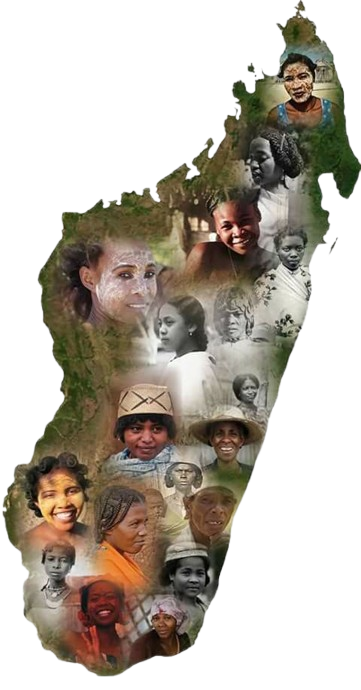
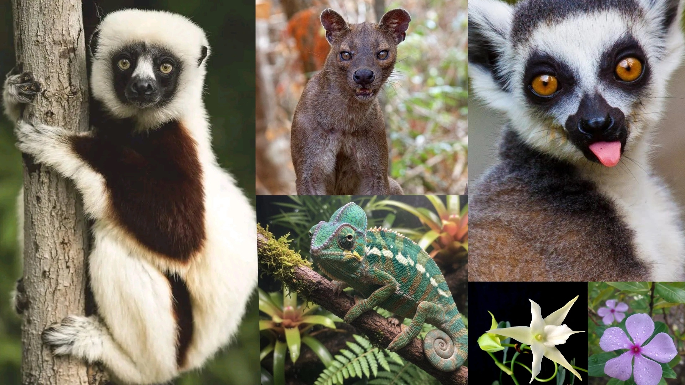
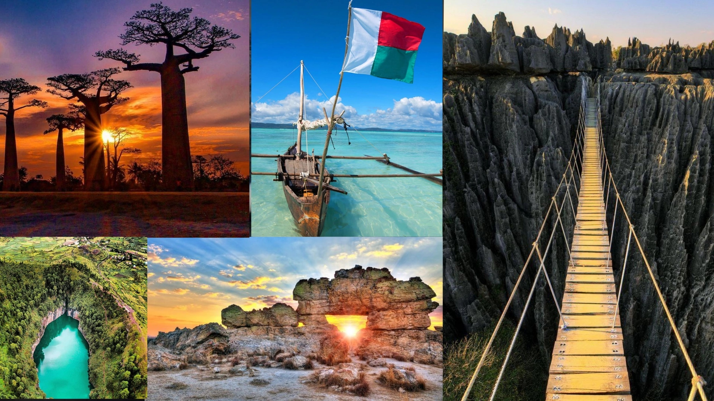

Terre de contrastes et de richesses, Madagascar est la quatrième plus grande île du monde, nichée au cœur de l'océan Indien. Sa biodiversité exceptionnelle, ses paysages allant des baobabs majestueux aux plages paradisiaques, et la mosaïque de ses 18 ethnies en font un patrimoine vivant et singulier. Ce carnet invite à découvrir l'âme malagasy, à travers ses traditions, ses croyances et son héritage transmis de génération en génération.
Madagascar est une île unique au monde : quatrième plus grande île de la planète, riche en biodiversité et en traditions, elle incarne à la fois un patrimoine naturel exceptionnel et une culture profondément enracinée dans l'histoire et la diversité de ses ethnies.
La culture malgache est un mélange fascinant d'influences africaines, asiatiques et européennes. Chaque région offre une immersion dans des traditions uniques, des rituels ancestraux comme le famadihana (retournement des morts) aux pratiques artisanales telles que la vannerie et la sculpture sur bois. La gastronomie, riche en saveurs, mêle produits locaux et influences extérieures, du romazava aux plats d'origine asiatique. Quant à la musique, elle reflète l'âme du pays à travers le salegy ou le hira gasy.

Madagascar est un sanctuaire de biodiversité, où plus de 80 % des espèces animales et végétales sont uniques au monde. Lémuriens, caméléons, baobabs majestueux et orchidées rares composent une faune et une flore exceptionnelles, témoins d'une évolution isolée depuis des millions d'années. Chaque région révèle des trésors naturels invitant à découvrir une richesse écologique incomparable.

Madagascar est une terre de contrastes où les paysages se déploient comme un véritable tableau vivant. Des hauts plateaux verdoyants aux rizières de Fianarantsoa, des forêts luxuriantes de l'Est aux savanes arides du Sud, chaque région révèle une identité singulière. Les baobabs de Morondava, les Tsingy sculptés par le temps, les plages de Nosy Be et les massifs de l'Andringitra témoignent de la diversité spectaculaire de l'île.

Pour toute question ou pour partager vos impressions autour des mythes et coutumes malagasy, laissez-moi un message.